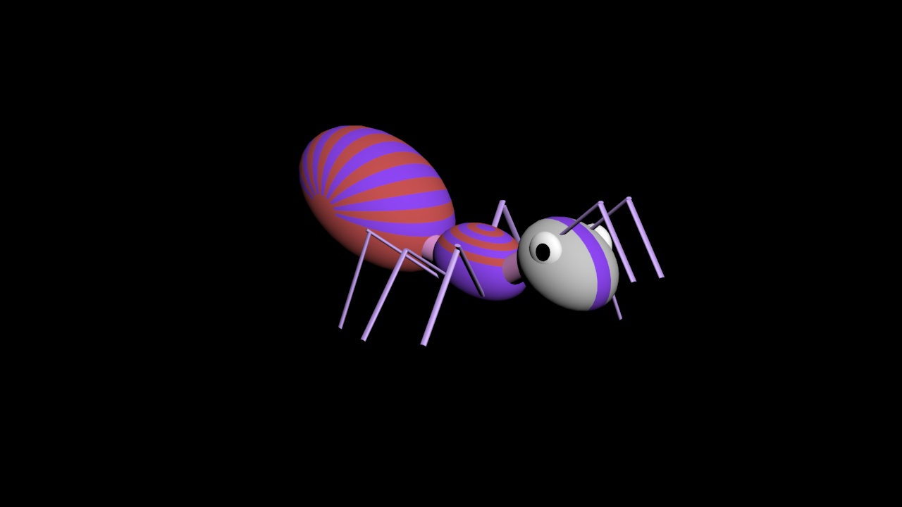

LOGBOOK: DAY 1
4/18/22
Today was my first day as a 20 year old. WHOOPEE! (Well, yesterday if you want to be technical about it). I had the idea of logging my adventures from this point onward, but we'll see what happens from here. My day was alright. It was easter, and it was also my birthday, which was a bit funny. I got a good amount of cash (Although I'm personally not a big fan of the stuff, seeing the greed it can create), but I'm thankful nonetheless. There was a tres leches cake, a chocolatey fudge-like cake, a cheesecake, a banana pie, cookies, and a lot more sugar. Mimi did a great job with the chicken and beef skewers, even if they weren't actually on skewers. They even had yummy peanut sauce to go with them which I'd say was my favorite part. Also, I didn't actually try the beef. Anywho, I slept in late and I was a bit hesitant to leave my room until she did her ususal go about of knocking two seconds before entering. My dad gave me a hug and I'm afraid that could be one of the only hugs we get from each other this year considering how little we actually partake in the action, for better or for worse. I'm tired now and I don't feel like typing much more, although I'd like to say Adrian created a lovely little ant for me tonight out of many vertices and colors and I think it's absolutely exceptional. I'll even post a picture of it right here!
Love, M

P.S.: It's a jpeg... hehe
 LOGBOOK: DAY 1
LOGBOOK: DAY 1